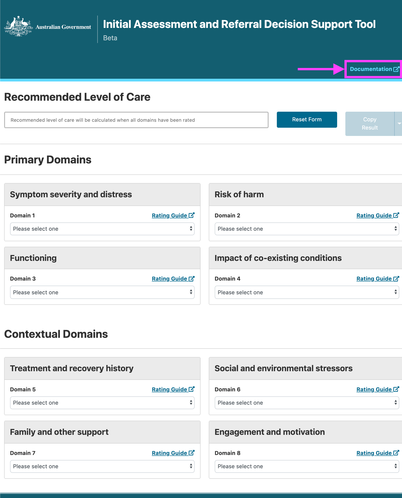
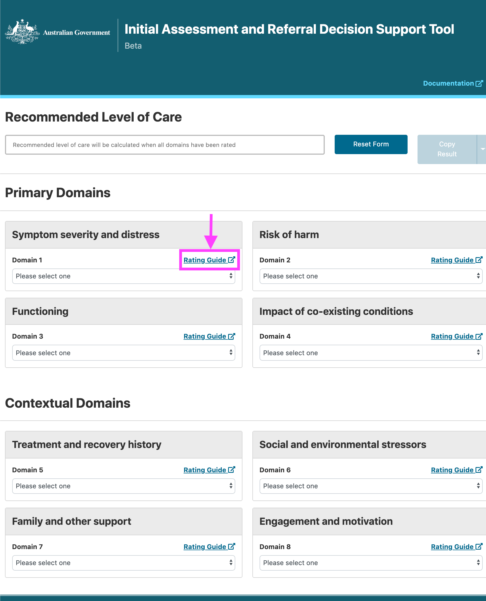
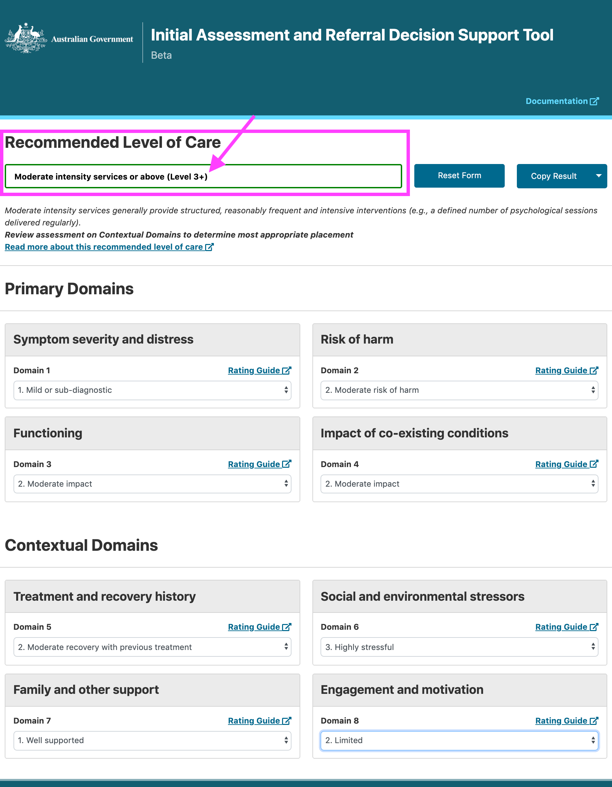

Using the Tool¶
Available help guides¶
Documentation¶
Before you begin your assessment, you may like to view our Documentation. You can view this by clicking the blue text Documentation at the top of your webpage. The Documentation will open in either a new browser window or tab, depending on your browsers default settings. Simply close the browser window/or tab to return to the DST.
{kind=link}
Rating Guide¶
As you work your way through the domain responses, you can click on a Rating Guide to view additional information about that domain. The Rating Guide will open in either a new browser window or tab, depending on your browsers default settings. Simply close the browser window/or tab to return to the DST.
{kind=link}
{kind=link}
Operating the tool¶
Calculating Level of Care¶
A score for each of the 8 domains will need to be selected before a Recommended Level of Care can be calculated. Further information on the calculated Level of Care can be viewed by clicking the blue text Read more about this recommended level of care.
For ease of use, the Recommended Level of Care results will stay at the top of your browsers page when you scroll.
{kind=link}
Saving results¶
Your results can be downloaded as a .csv file by clicking the arrow next to the Copy Results button, then selecting Download Results. Please see our instructions on downloading your results and our suggestions on saving them for future use.
{kind=link}